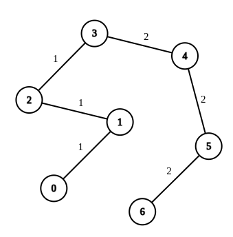
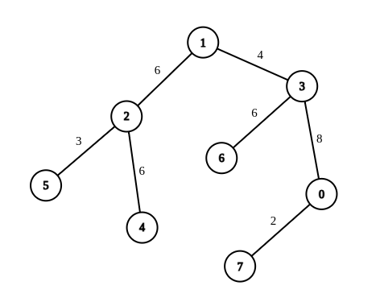

| Category | Difficulty | Likes | Dislikes |
|---|---|---|---|
| Algorithms | Hard | 349 | 9 |
sprinklr
There is an undirected tree with n nodes labeled from 0 to n - 1. You are given the integer n and a 2D integer array edges of length n - 1, where edges[i] = [ui, vi, wi] indicates that there is an edge between nodes ui and vi with weight wi in the tree.
You are also given a 2D integer array queries of length m, where queries[i] = [ai, bi]. For each query, find the minimum number of operations required to make the weight of every edge on the path from ai to bi equal. In one operation, you can choose any edge of the tree and change its weight to any value.
Note that:
ai to bi is a sequence of distinct nodes starting with node ai and ending with node bi such that every two adjacent nodes in the sequence share an edge in the tree.Return an array answer of length m where answer[i] is the answer to the ith query.
Example 1:

Input: n = 7, edges = [[0,1,1],[1,2,1],[2,3,1],[3,4,2],[4,5,2],[5,6,2]], queries = [[0,3],[3,6],[2,6],[0,6]]
Output: [0,0,1,3]
Explanation: In the first query, all the edges in the path from 0 to 3 have a weight of 1. Hence, the answer is 0.
In the second query, all the edges in the path from 3 to 6 have a weight of 2. Hence, the answer is 0.
In the third query, we change the weight of edge [2,3] to 2. After this operation, all the edges in the path from 2 to 6 have a weight of 2. Hence, the answer is 1.
In the fourth query, we change the weights of edges [0,1], [1,2] and [2,3] to 2. After these operations, all the edges in the path from 0 to 6 have a weight of 2. Hence, the answer is 3.
For each queries[i], it can be shown that answer[i] is the minimum number of operations needed to equalize all the edge weights in the path from ai to bi.Example 2:

Input: n = 8, edges = [[1,2,6],[1,3,4],[2,4,6],[2,5,3],[3,6,6],[3,0,8],[7,0,2]], queries = [[4,6],[0,4],[6,5],[7,4]]
Output: [1,2,2,3]
Explanation: In the first query, we change the weight of edge [1,3] to 6. After this operation, all the edges in the path from 4 to 6 have a weight of 6. Hence, the answer is 1.
In the second query, we change the weight of edges [0,3] and [3,1] to 6. After these operations, all the edges in the path from 0 to 4 have a weight of 6. Hence, the answer is 2.
In the third query, we change the weight of edges [1,3] and [5,2] to 6. After these operations, all the edges in the path from 6 to 5 have a weight of 6. Hence, the answer is 2.
In the fourth query, we change the weights of edges [0,7], [0,3] and [1,3] to 6. After these operations, all the edges in the path from 7 to 4 have a weight of 6. Hence, the answer is 3.
For each queries[i], it can be shown that answer[i] is the minimum number of operations needed to equalize all the edge weights in the path from ai to bi.
Constraints:
1 <= n <= 104edges.length == n - 1edges[i].length == 30 <= ui, vi < n1 <= wi <= 26edges represents a valid tree.1 <= queries.length == m <= 2 * 104queries[i].length == 20 <= ai, bi < n